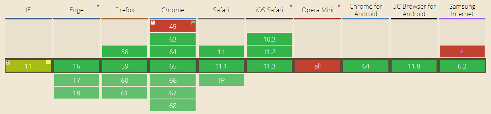

Введение
CSS Grid Layout - самая мощная система компоновки из доступных на данный момент в CSS. Это двумерная система, которая может обрабатывать как колонки так и строки, в отличии от Flexbox, который в значительной степени является одномерной системой. При работе с CSS Grid, вы применяете CSS правила и родительским элементам (которые становятся Grid контейнерами) и к дочерним элементам (которые становятся Grid элементами).
Совместимость с браузерами
Основные свойства
# display
Определяет элемент как контейнер и устанавливает новый контекст форматирования сетки для его содержимого
Больше информации# grid-template-columns
Определяет колонки сетки с помощью списка значений разделённого пробелами. Значения представляют из себя размер трека, а пробелы между ними представляют линии сетки.
Больше информации# grid-tempate-rows
Определяет строки сетки с помощью списка значений разделённого пробелами. Значения представляют из себя размер трека, а пробелы между ними представляют линии сетки.
Больше информации# grid-auto-columns
Определяет размер любых автоматически созданных треков (иначе говоря, неявных треков). Неявные треки создаются при явном позиционировании столбцов и строк (через grid-template-rows/grid-template-columns), которые находятся за пределами заданной сетки.
Больше информации# grid-auto-rows
Определяет размер любых автоматически созданных треков (иначе говоря, неявных треков). Неявные треки создаются при явном позиционировании столбцов и строк (через grid-template-rows/grid-template-columns), которые находятся за пределами заданной сетки.
Больше информации# grid-column-gap
Определяет размер ширины линий. Вы можете думать об этом, как о настройке ширины отступов между столбцами
Больше информации# grid-auto-flow
Если у вас есть элементы, которые вы явно не позиционируете в сетке, запускается алгоритм авто-размещения, чтобы их автоматически разместить. Это свойство контролирует то как алгоритм авто-размещения работает.
Больше информации# grid-column-start
Определяют местоположение в сетке ссылаясь на конкретные линии. grid-column-start/grid-row-start - это линия с которой начинается элемент, а grid-column-end/grid-row-end - это линия на которой элемент заканчивается.
Больше информации# grid-column-end
Определяют местоположение в сетке ссылаясь на конкретные линии. grid-column-start/grid-row-start - это линия с которой начинается элемент, а grid-column-end/grid-row-end - это линия на которой элемент заканчивается.
Больше информации# grid-row-start
Определяют местоположение в сетке ссылаясь на конкретные линии. grid-column-start/grid-row-start - это линия с которой начинается элемент, а grid-column-end/grid-row-end - это линия на которой элемент заканчивается.
Больше информации# grid-row-end
Определяют местоположение в сетке ссылаясь на конкретные линии. grid-column-start/grid-row-start - это линия с которой начинается элемент, а grid-column-end/grid-row-end - это линия на которой элемент заканчивается.
Больше информации# grid-area
Даёт название элементу чтобы можно было ссылаться на него с помощью шаблона созданного через grid-template-areas свойство. В качестве альтернативы, это свойство может быть использовано в качестве сокращения для grid-row-start + grid-column-start + grid-row-end + grid-column-end.
Больше информации# grid-template-areas
Определяет шаблон сетки ссылаясь на имена областей, которые заданы с помощью свойства grid-area. Повторение названия области приводит к тому, что содержимое охватывает эти ячейки. Точка означает пустую ячейку. Сам синтаксис предоставляет визуализацию структуры сетки.
Больше информации# grid-template
Сокращение для grid-template-rows, grid-template-columns, и grid-template-areas.
Больше информацииПримеры
See the Pen QmraGv by Andrey ( @Laskarevskiy73) on CodePen.
See the Pen rdvdjW by Andrey ( @Laskarevskiy73) on CodePen.
See the Pen RMyMVe by Andrey ( @Laskarevskiy73) on CodePen.
See the Pen pLVLrg by Andrey ( @Laskarevskiy73) on CodePen.
See the Pen JLvLpp by Andrey ( @Laskarevskiy73) on CodePen.
Links
- http://cssgridgarden.com - Игра по изучению CSS GRID
- http://www.webmasters.by - Введение в CSS3 Grid Layout
- https://tuhub.ru - Полное руководство по CSS Grid
- https://www.youtube.com - Video CSS Grid
- https://www.youtube.com - CSS Grid убийца Flexbox? (Доклад Rachel Andrew, 2017)
- https://github.com - Css Grid Highlighter for Chrome
- CSS Grid Inspector - CSS Grid Inspector for Firefox